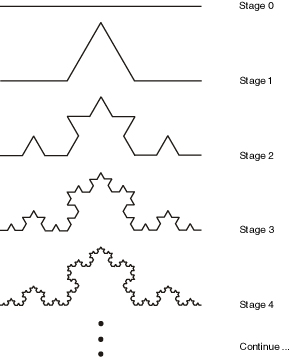

Symbol systems
Development and L-systems
The structure of a multi-cellular organisms develops in a gradual process from a single fertilized cell (the zygote) through progressive steps of cell duplication and specialization in a process called development; an active area of scientific research today. We know that each cell responds to chemical signals from its neighbors and other environmental conditions in order to know how to differentiate (to become a specific kind of cell in the body), according to the processes of the genome. The zygote does not contain a blueprint for the final organism, simply genotypic instructions for responding to environmental stimuli, which happen (in most cases) to produce the fully developed phenotype.
A compact developmental representation can result in a more complex developed organism by relying on the self-organizing tendencies of the chemical substrate (such as the chemical pattern formation we saw with reaction-diffusion systems), the creative re-use of instructions (leading to the modularity and symmetry widely found in biology), and careful control over the ordering, when and for how long particular instructions operate (heterochrony). Development is clearly parallel, decentralized, granting some robustness, and yet it is also context dependent. It is also self-limiting, such that most developmental processes halt after the embryonic phase (though some may continue through the organism’s lifetime, such as the regeneration of lost limbs).
In 1968 biologist Astrid Lindenmeyer proposed to model several aspects of developmental systems (cell division, cell differentiation and cell death) using rewriting systems on symbolic strings. The analogy is that each symbol represents a cell in a particular state, and the rules of transformation represent the processes of differentiating from one state to another, dividing into two cells, or of programmed cell death.
Rewriting systems
A rewriting system defines rules for the transformation of structures, typically strings of symbols. It is closely related to the formal notion of grammar. A system comprises:
- A set of possible symbols (A), called the alphabet
- An initial symbol (S), called the axiom
- A set (P) of rewriting or production rules to specify how each symbol is transformed to other symbols, at each production step. A rule converts a predecessor symbol into successor symbols.
- A process of applying these rules in parallel, step by step until no more productions can be applied.
For example, if the alphabet comprises { “B”, “F”, “+”, “–”, “[”, “]” }, the rules include F –> FF and B –> F[–B]+B, and the start symbol is B then a sequence of productions could proceed as follows:
B -- apply rule 1: F[-B]+B -- apply rule 1 (twice), and rule 2: FF[-F[-B]+B]+F[-B]+B -- apply rule 1 three times, rule 1 four times: FFFF[-FF[-F[-B]+B]+F[-B]+B]+FF[-F[-B]+B]+F[-B]+B -- etc.
Notice that any symbol that is not a predecessor of a production rule is passed through unchanged (it is not removed).
Turtle graphics
One of the simplest ways to use rewriting sytems for art and design is to interpret the produced strings as instructions for another program. The classic example is using them as instructions for a “turtle graphics” interpreter.
For example, using the following system:
-- just one rule: replace "F" with "F+F--F+F" rules["F"] = "F+F--F+F" -- start with: S = "F"
If we interpret the “F” symbol to mean “move forward”, and the “+” and “–” symbols to mean turn left and right by 60 degrees, then each successive application of this rule generates a successive iteration of the Koch curve fractal:

Turtle graphic Koch curve in LuaAV
Setting up the start symbol and rules is straightforward:
-- start pattern: local S = "F" -- production rules: local rules = { F = "F+F--F+F", }
The process to apply rules will need to construct a new string from an existing string, by working through and attempting to match any of the existing rules. For a simple, single-character grammar like this, the implementation is not too difficult:
-- apply production rules: function apply_production_rules(input) -- create a list to store the output results: local result = {} -- work through each character of the input string: for i = 1, #input do -- get the i'th character: local c = input:sub(i, i) -- is there a corresponding rule? if rules[c] then -- append the result of the rule: result[#result+1] = rules[c] else -- append the unchanged character: result[#result+1] = c end end -- now convert the result list into a single string: return table.concat(result) end
Interpreting a string for turtle graphics is a little more complex, as we first need to create a turtle with state. The state is the location of the turtle, and the direction it is facing:
function turtle_make() return { location = vec2(0, 0), direction = vec2(0.01, 0), } end
Then we can create a function to interpret a string by a turtle. Again, this is fairly easy here since we can simply progress character by character:
local angle = math.pi / 3 local turtle = turtle_make() function turtle_interpret(input) -- work through each character of the input string: for i = 1, #input do -- get the i'th character: local c = input:sub(i, i) if c == "F" then -- move & draw turtle: local p = turtle.location + turtle.direction draw2D.line(turtle.location.x, turtle.location.y, p.x, p.y) turtle.location = p elseif c == "+" then -- turn turtle: turtle.direction:rotate(angle) elseif c == "-" then -- turn turtle: turtle.direction:rotate(-angle) end end end
Bracketed systems
By adding push “[” and pop “]” symbols to save/restore graphics state (position, orientation etc.), the graphics interpreter can render branched structures such as trees and ferns. The result is further improved by reducing the length of each line according to the bracketed recursion depth.
To implement this in our script, we can create a new turtle when the “[” symbol appears, and return back to the previous turtle when the “]” symbol appears. We can do this via a stack of turtles. Remember, a stack is just a list to which we always add and remove at the end (the top).
local turtle_stack = {} function turtle_interpret(input) -- work through each character of the input string: for i = 1, #input do -- get the i'th character: local c = input:sub(i, i) -- get the top-most turtle: local turtle = turtle_stack[#turtle_stack] if turtle == nil then error("we ran out of turtles! maybe there are too many ']' symbols in " .. input) end if c == "F" then -- move & draw turtle: local p = turtle.location + turtle.direction draw2D.line(turtle.location.x, turtle.location.y, p.x, p.y) turtle.location = p elseif c == "+" then -- turn turtle: turtle.direction:rotate(angle) elseif c == "-" then -- turn turtle: turtle.direction:rotate(-angle) elseif c == "[" then -- push a new turtle: table.insert(turtle_stack, turtle_make()) elseif c == "]" then -- remove top-most turtle: table.remove(turtle_stack) end end end function draw() -- re-initialize the stack of turtles with just one turtle: turtle_stack = { turtle_make() } turtle_interpret(lsystem_string) end
Context-sensitive formal languages
An alphabet and production rules specify a formal language. In 1959 Noam Chomsky identified a hierarchy of four types of formal languages. They rest on the concept of terminal and non-terminal symbols, where a symbol is terminal if it cannot be further rewritten. Nonterminal symbols, which can be further rewritten, are normally indicated using upper case letters (A, B, C) and terminal symbols by lowercase letters (a, b, c).
Each set in the hierarchy contains those above it:
- Regular (Type-3): the predecessors of rules are a single nonterminal, the successors are a single terminal possibly followed by a single nonterminal, e.g. A –> Ab or A –> B.
- Context-free (Type-2): the predecessors are a single nonterminal, and the sucessors can be any string of terminals and nonterminals.
- Context-sensitive (Type-1): the predecessors contain multiple symbols (including at least one nonterminal), and the sucessor is a copy with the nonterminal replaced by an arbitrary string of nonterminals. E.g. aBc –> aBbc, Ab –> aaab, abcD –> abcF, etc. They are therefore akin to Type-2 rules except with additional conditions regarding neighboring symbols (which remain unchanged).
- Unrestricted (Type-0): predecessors and successors can both be any finite sequence of symbols without restriction.
So far we have considered only regular and context-free formal languages, since we have been restricted to single nonterminal symbols on the left-hand side (predecessors). Clearly, as a biological model (where the string is the phenotype and the production rules are genotype), our system should be context sensitive. Context would imply environmental conditions as well as neighbor cell signaling.
In order to support context-sensitive languages, we will need more powerful pattern-matching capabilities, and need extra care to handle ambiguous situations. E.g. we must be careful to consider longer patterns before shorter ones, to ensure that e.g. aba matches a rule aba –> abba rather than the rule a –> b. That is, our set of rules must now form a list (rather than a set), which is ordered by priority.
Parametric systems
A parametric L-system embeds parameters (such as line length and rotation angle) into the symbols, and sucessors may modify these parameter values. For example, the rule F(x) –> F(x*2) transforms a forward step into a forward step of twice the length.
A conditional parametric L-system extends this to incorporate conditions, such that the subsitution only occurs if the condition is true. For example, F(x : x < 10) –> F(x*2) transforms a forward step into a forward step of twice the length, only if the initial length was less than 10.
In both cases, our pattern matching system now needs to be able to handle classes of symbols (or at least, ignore anything between parentheses).
Stochastic systems
So far our systems are deterministic, and will always reproduce the same results after a fixed number of steps. To create a more natural-looking result, we can introduce non-determinism:
- Into the interpreter (by adding small deviations to the turtle, for example). This will remove the stark repetition, but still preserves topological symmetry.
- Into the production rules. This can generate new topologies.
A stochastic L-system does the latter: for a given non-terminal predecessor, there may be several successor strings which are selected at random (possibly according to weights). Or, if the rules are listed by priority, each rule can have a probablity of being ignored.
Evo-Devo
L-Systems are difficult to predict and control: it is difficult to infer from an L-system definition and interpreter what the results will be, since (like cellular systems) the interactions are local but the consequences are global. Note that nature faces the same challenge: it cannot predict what changes to a genotype will result is viable or better phenotypes, and must proceed by trial and error (within the scope offered by development). Biologists exploring the mechanisms of development and generation of variation within it, and the relationship with evolutionary selection, work within the relatively new discipline of evolutionary development or “evo-devo”.
The role of development in the generation of variation is equally important for artificial evolution, however it has been less thoroughly explored. Two lessons from the biologists:
- Development is not just a compact representation of a phenotype, but can be crucial to the generation of complex systems.
- The recent discovery that widely different species re-use the same developmental genes and mechanisms. This perhaps suggests that finding a good set of re-usable mechanisms for long-term evolvability (continuous generation of selectable novelty) is not an easy task.
- Development is not a one-way process, under command of the genome: factors in the environment can activate or inhibit parts of the genome (and parts of a genome can activate and inhibit other parts) in a complex regulatory network, and the state of the environment can affect the results of actions of the genome. In some cases the genome itself may not even be fixed. In part this environment is also inherited from an organisms' parents.
- Development is ultimately working within the limits of a physical, chemical system, with entropic tendencies, self-organizing potential, noisy behavior, etc.
Artificial Evo-Devo systems could be categorized as follows:
- The developmental process is hand-written, and evolution only works on parameters for this system. This is amounts to a simple genotype-phenotype map.
- Mechanims of development are encoded in the genotype, but in a fixed sequence (a fixed order with a fixed number of applications). This is suitable for evolving optimal L-systems for a given pattern, for example.
- The genotype encodes the sequence of applications of hand-written development mechanisms, as used for example in genetic programming.
- Both the basic mechanisms and the sequence of applications are encoded in the genotype and are therefore subject to evolution. Obviously the space of exploration is much larger and less predictable, but the challenge of finding suitable primitives and representations is difficult.
Whether it is parameters, sequence, mechanisms (or several) that are to be evolved, they must all be represented in the genome in forms that can be inherited, with additional mechanisms for generating variation (e.g. mutations). That is, each one of these elements must be represented symbolically as data (e.g. as strings, trees or matrices of symbols, which may be as low-level as binary form or as high-level as readable text).
Artificial chemistries and programmable media
One of the most enduring questions facing biology (and artificial life) regards how life itself emerged from non-life, and how that boundary continues to be bridged (“protobiology”). The emergence of life has not yet been observed in physical materials, however there are many hypotheses offered. In general the problem is how life-like behavior and organization emerges from simpler physical chemical systems; or at the very least, how new orders of structure emerge from simpler chemical models. Artificial chemistries (AC) are systems with similarities to models of physics and chemistry which can be used to explore these speculative models with more rigor.
AC’s were proposed by John McCaskill, but probably the best known example (“AlChemy”) was created by Walter Fontana and Leo Buss, presented at the second Artificial Life conference. Hideaki Suzuki and Takashi Ikegami pursued the concept in Japan (with “systems of machines and tapes”, referencing von Neumann’s early work). Banzhaf, Dittrich and Ziegler present an excellent review here. See also Artificial Chemistry. Hideaki Suzuki, Peter Dittrich. Artificial Life 2009, Vol. 15, No. 1.
Typical an AC includes:
- A set S of possible molecule types. This set could be finite or infinite (as far as we know, the set of possible molecules in the universe is infinite.) Molecules could be represented in the program as symbols, character strings, numbers, lambda-expressions, trees, etc.
- A set R of possible reaction rules, in which input combinations of input molecules produce combinations of output molecules; e.g. A + B –> 2C or A + 2B –> A + D. Note that the second example is a catalytic reaction, since one of the inputs (A) is preserved unchanged. A reaction may also have other conditions, such as ambient temperature; and may have an associated probability (“rate constant”) and energetic cost.
- A population P of molecules (drawn from S) that exist at any moment.
- An algorithm A specifying how to apply rules R to population P and thus update to the population of the next instant (P'). The algorithm could take into account spatial proximity, or it could assume that all chemicals rapidly disperse (the “well-stirred reactor” model), in which reactions are selected stochastically. On the other hand, if concentrations of molecules are represented as continuous numbers, differential equations may be used.
The algorithm may also include a source and sink: the source is a continuous input of new (base) molecules, and a sink is a gradual removal of molecules to maintain population size. In addition, certain reactions may be filtered to make the whole system more interesting (e.g. discarding reactions that produce nothing more than one of their inputs).
There are clearly similarities with rewriting systems (where the active population is the item being rewritten, made of molecule terms and reaction productions). There can also be similarities found with evolutionary, cellular and dynamical systems. Alternatively, AC’s can be viewed as a special case of agent systems, in which each agent belongs to a molecule-class, and reactions are a result of agent interacitons (in which interactions usually lead to the creation and destruction of agents).
The kinds of structures that can emerge include self-maintaining populations, auto-catalytic cycles, adaptive cycles, and so on. Artificial chemistries are also one possible attractive option to overcome the ‘over-specified’ nature of most artificial evolutionary and / or developmental systems: a mechanism by which new features come into being, new behaviors, new sensors, new evolutionary pathways, even new modes of evolution. They have also been applied to optimization problems, and to the modeling of social systems.
An important design choice is how to define the reaction rules. For a finite system these could be designed by hand (or to model a well-known physical system). For an infinite system they must be derived on demand; this could be done programatically according to reactant structures, in an approximation to molecule bonding mechanisms (or protein folding). For example, a simple demonstration AC uses integer division to define reactions: each molecule type is an integer (greater than one), and two molecules can react if they leave no remainder after division (the long-term behavior of this system tends to increase the concentration of prime numbers). Another possibility is to generate reactions and rates randomly as needed.
Like artificial life, in artificial chemistries the assumption holds that organization (information) is the most essential component. One of the central insights stems from a clear analogy between life and computation: organisms are created by organisms, just as programs can create programs. Underlying this is the ease of mapping of code and data, mirroring a relationship between physical structure and behavior (form and function). Fontana exploited this directly by representing chemicals as LISP expressions, which react by processing other LISP expressions. Other authors have mapped binary strings into machine instructions for a virtual machine.
Virtual machines as byte-code ecosystems
The equivalence of code and data underlies the theory of computation itself. It is used widely today by any language interpreter (such as the Lua console program), which parses input code into a series of instructions, and interprets these instructions one by one to produce output behavior. As a result is behaves as if it was itself a computer. Programs such as these are called virtual machines. Even a turtle-graphics interpreter is a virtual machine.
Since at least the early 1980’s people have enjoyed creating virtual machines to explore the possibility of programs competing for control of the virtual machine processors and memory (see Core War). Ecologist Tom Ray was inspired to create a virtual machine in which the programs can evolve and modify each other, and found behaviors of symbiosis and parasitism. Documentary video
Although byte-code systems are older, it has also been suggested that they are also a form of artificial chemistry, in which organisms are molecules (structured as binary sequences).
Virus and anti-virus systems have been modeled in these terms, although they also draw upon theories of immune systems.